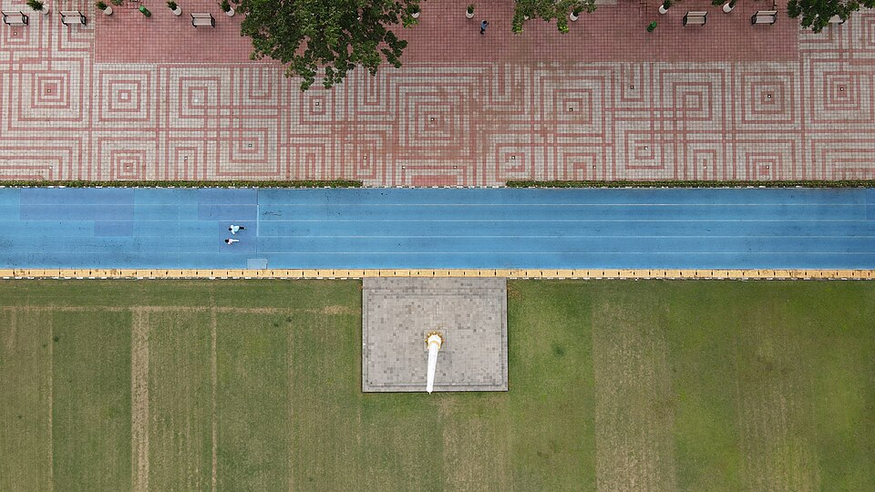

马拉松里程碑
截至 2026 年 11 月，比赛、成绩与训练节奏。
- 全球大满贯赛事已完成全球 8 大满贯赛事8
- 六大满贯完成两轮完整的六大满贯2 轮
- 全马比赛累计跑过近 50 场全程马拉松近 50 场
- 个人最好成绩2026 年 3 月，韩国首尔3:05:30
- 稳定月跑量目前长期保持的训练范围350–450 km
从减重开始
2016 年，为了减重，我开始跑步。最初只是 2 公里，慢慢到 5 公里、10 公里；随着训练持续，我完成了半马和全马。
跑步从此不只是一项减重计划。它变成了长期习惯，也把我带到世界各地的赛道。

现在的节奏
2016 年从两公里开始，2026 年在首尔跑到 3 小时 5 分 30 秒。现在，我每月保持 350–450 公里。